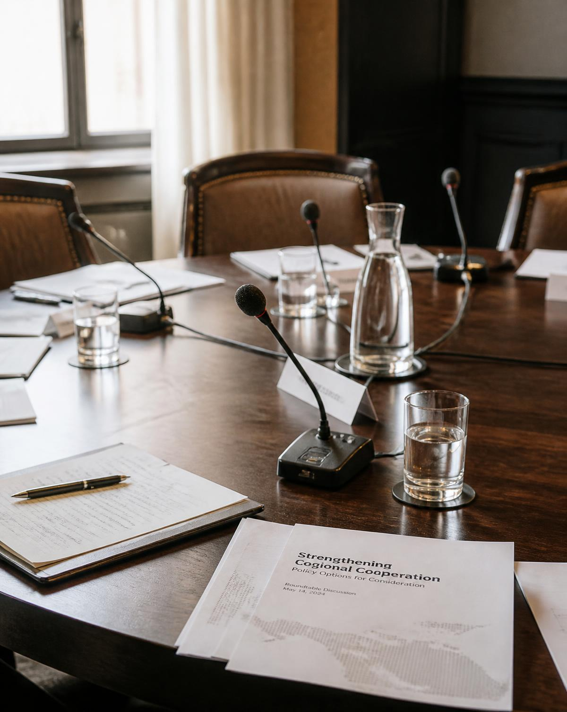

Education & professional development
Structured non-formal education in European affairs, diplomacy, negotiation and professional practice, delivered by practitioners and assessed through applied work.
OUR WORK
ENGF works by building durable structures rather than isolated events: a programme is designed, delivered, documented and published, and its conclusions are carried into the next cycle.
Structured non-formal education in European affairs, diplomacy, negotiation and professional practice, delivered by practitioners and assessed through applied work.
Fellowships, thematic working groups and published analysis that meet an academic standard and remain legible to institutional readers.
Conferences, roundtables, consultations and civic education that place young people in documented exchange with those who decide.
Exhibitions and open calls for emerging artists, alongside volunteering and community engagement with local partners.
Information, research and facilitation supporting the digitalisation of education and the responsible use of artificial intelligence.
Partnerships with universities, public institutions, embassies, international organisations, think tanks and the private sector.

Participation is only meaningful when it is documented, argued and answerable.
ENGF — METHOD OF WORK
Department for Academic Programmes & Research
Department for Education & Professional Development
Department for Civic Participation & Institutional Dialogue
Department for Public Communication & Civic Education
Department for Conferences & Strategic Dialogue
Department for Volunteering & Community Engagement
Department for Culture & Creative Industries
Department for Digital Transformation & Innovation in Education